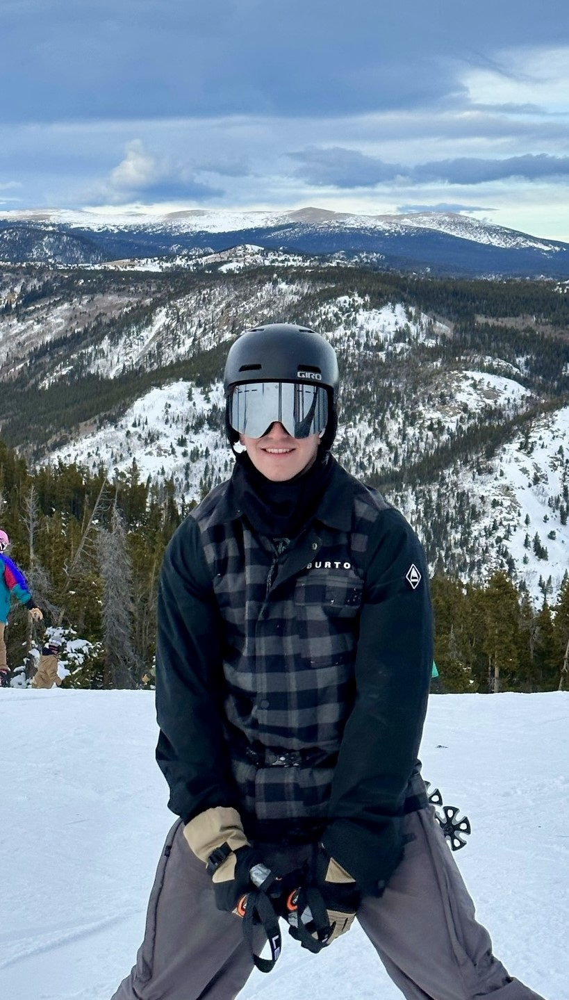

About Me
Hi! I’m Bill Martynowicz, a Computer Science student at CU Boulder who loves blending technology with creativity. Whether I’m skiing down the slopes, bowling, or playing video games, I’m always drawn to activities that challenge me and keep me learning. My favorite aspect of coding is to visual see what I made and looks or ways to improve it. On top of that, I’m a big WNBA fan and can’t wait to cheer on the Golden State Valkyries as the league continues to grow. When it comes to tech, I’m passionate about solving problems and bringing ideas to life. I’ve worked with languages like Java, Python, C++, HTML, CSS, JavaScript, C, and Scala, and I enjoy finding creative ways to tackle challenges in both school and personal projects. For me, coding is more than just writing programs—it’s about creating something meaningful and having fun while doing it. Whether I’m exploring the latest advancements or building something new, I’m excited to keep growing and making an impact.